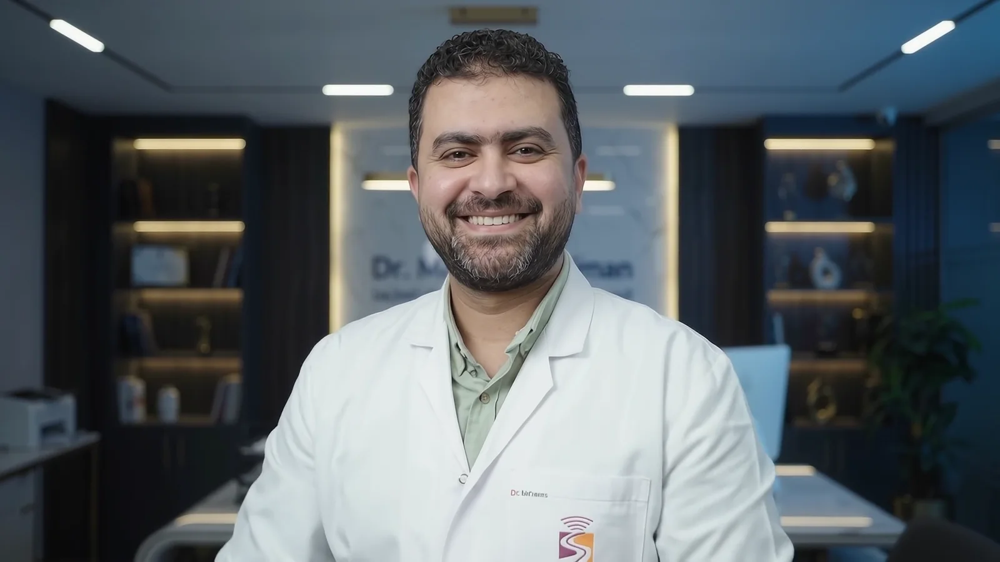

مسيرة مهنية وأكاديمية
طب يستند إلى المعرفة، ويكبر بمشاركتها.
مسيرة تجمع بين دقة الممارسة الإكلينيكية، واستمرار البحث، والتزام حقيقي بتدريب الأطباء.
عن د. محمد
استشاري، محاضر، ومؤسس لمنصة تعلم طبي.
رؤية واحدة بثلاثة أدوار مترابطة
يعمل د. محمد مصطفى سليمان استشاريًا للأشعة التشخيصية والتداخلية، مع تخصص وخبرة في جميع فروع السونار والسونار رباعي الأبعاد، واهتمام خاص بسونار الأطفال وحديثي الولادة والحضانات.
وبجانب الممارسة، يعمل محاضرًا معتمدًا بنقابة الأطباء ومدربًا معتمدًا بالجمعية المصرية للأشعة، ليحوّل الخبرة اليومية إلى معرفة قابلة للتطبيق والمشاركة.
الهدف ليس قراءة الصورة فقط، بل فهم السؤال السريري وتقديم إجابة تساعد الطبيب والمريض على اتخاذ الخطوة التالية بثقة.
ومن هذا التصور تأسست RadioMind للتدريب الطبي، كمساحة تركز على بناء الفهم العملي، وربط المفاهيم الأكاديمية بالمواقف الحقيقية داخل الممارسة.

التأهيل
تعلم مستمر على امتداد المسيرة
ماجستير الأشعة
الزمالة المصرية في الأشعة
البورد العربي في الأشعة
دراسة الدكتوراة
محاضر معتمد بنقابة الأطباء
مدرب معتمد بالجمعية المصرية للأشعة
مدير ومؤسس شركة RadioMind للتدريب الطبي